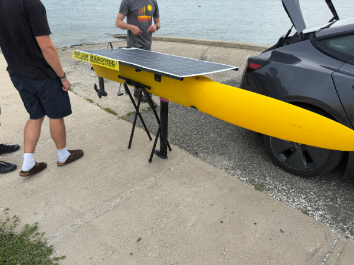
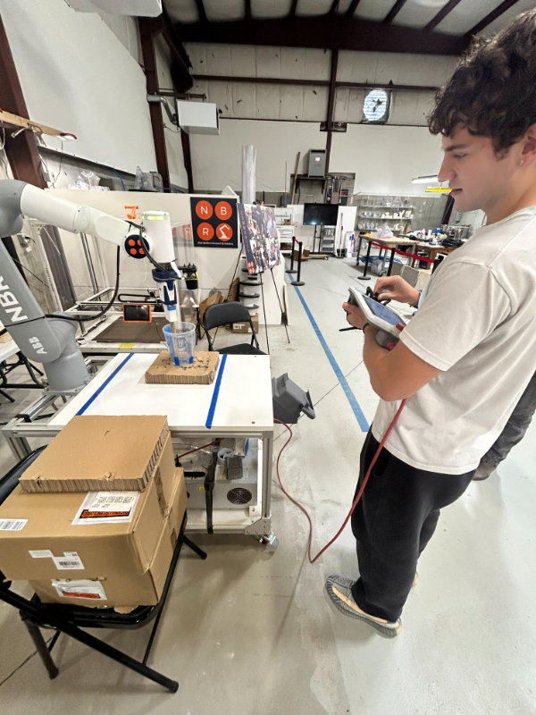
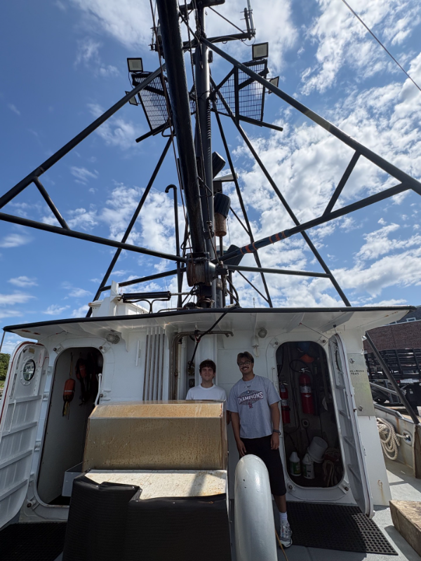
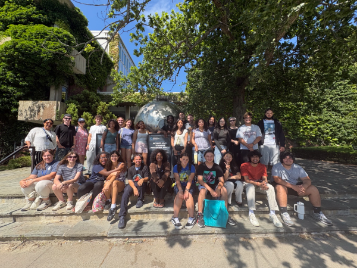
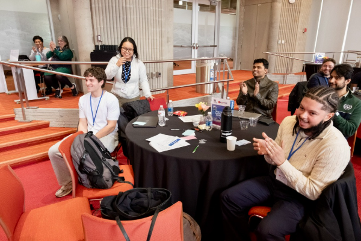
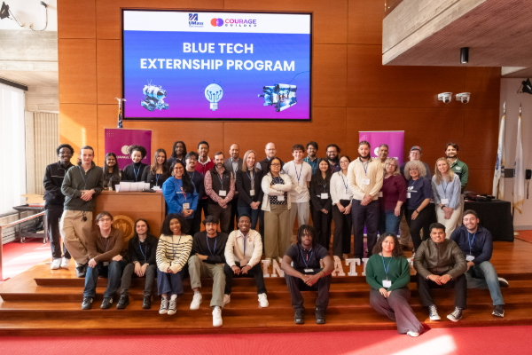

CS student, AI concentration — UMass Dartmouth
Attleboro, Massachusetts
I'm a computer science student at UMass Dartmouth, concentrating in AI. So far I have, simply put, build things that take messy real-world data and turn it into something someone can act on.
At my Summer internship that means the seafloor. I'm at New Bedford Research & Robotics working on a pipeline that fuses NOAA charts, multibeam surveys, and live sonar off an autonomous surface vessel to catch changes on the bottom before they become somebody's problem.
Before that it was retrieval pipelines over academic papers, a dining-hall recommendation app, and an autonomous underwater vehicle simulation that won its externship. On the side I run Wessman Systems, which has been answering a heating company’s missed calls since March.
An autonomous underwater vehicle simulation that hunts ghost gear — abandoned fishing equipment that keeps catching things long after anyone's watching. MATLAB and Simulink, 72 hours, pitched to industry judges. It turned into the NBRR internship.
Automates literature review across arXiv and PubMed. I built the multi-agent coordination layer — paper analysis, citation extraction, citation-grounded briefs — over LangChain, Hugging Face models, and vector search on Delta Lake, with MLflow and Unity Catalog behind it. Built with the Databricks team on system architecture.
A retrieval pipeline for academic PDFs, end to end: ingestion, metadata extraction, SQLite storage, sliding-window chunking, embeddings, FAISS index. Ask it a question in plain language and it finds the passages that answer it.
Aggregates dining and nutritional data from several university sources into one cloud database, then recommends meals from the live menu. I owned the Firebase infrastructure, the Python scraping, and the recommendation logic.






Support across Windows and Apple fleets — enterprise software, hardware configuration, device imaging, and the documentation that keeps it repeatable.
Daily banking operations, compliance, and fraud awareness — a useful education in how carefully regulated systems actually behave.
Operating systems, object-oriented programming, C, computing systems, data structures.
My freelance practice, with one job: make sure a missed call never turns into a lost customer. A Flask and SQLite service catches missed calls through Telnyx Call Control webhooks, records the voicemail, parses the inbound text into structured name, address, and service fields, replies to the customer with a callback window, and sends the owner a link to the recording.
Behind it sits a mobile-friendly dashboard — click-to-call, status tracking, and notes over a rolling 72-hour window — built on an application factory with blueprint routing, a service layer, signed webhook verification, and Gunicorn in production.
Internships, a project you want built, or a business drowning in missed calls — email is the fastest way to reach me.
Download résumé